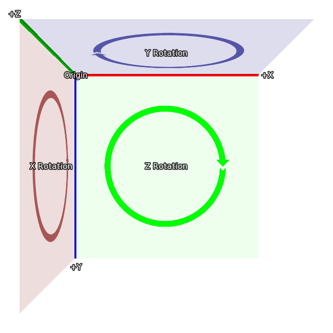

3D Stage link
The 3D Stage, named after the stages that plays are performed on, is a concept that allows displayables to be positioned in 3 dimensions. Ren'Py will then render the displayables with the proper perspective, and will also make the z dimension avalable, to make things like lighting and depth rendering possible.
Coordinates link
Probably the most important thing to understand about the 3D Stage is the coordinate system that Ren'Py uses for the 3D state. Here's the coordinate system that's used to place displayables in 2D:

In 2D, the rectangle is the size of the screen, and the width and height
of the visible area is set using gui.init() (usually when first making
a new game).
The 3D stage extends this coordinate system with a new axis, one facing towards the viewer, so that values greater than 0 bring an image closer (and make it bigger), and those less than 0 move the image away from the viewer (and make it smaller).
Finally, when a rotation in 3d happens, it's in the directions given here:
- When rotating around Z, X moves toward Y.
- When rotating around X, Y moves toward Z.
- When rotating around Y, Z moves toward X.
These coordinate systems are based on those used in Ren'Py, making it easy to move from 2D to the 3D stage. When importing 3D models, coordinate transforms may be applied to ensure the model coordinates are sensible.
Camera link
The initial placement of the camera is controlled by the parameters to
gui.init(). First, Ren'Py uses width and fov to compute the
default z distance. For the default fov of 75:
- When width = 1280, z is about 834
- When width = 1920, z is about 1251
- When width = 3840, z is about 2502
Where the actual value of z is less than 1 higher than the values given
here. The default z placement can be overridden with the perspective
style property, or the config.perspective variable.
Ren'Py automatically applies an offset of (width / 2, height / 2, z) to the camera, and it looks down the -Z axis.
The z distance is also the distance from the camera to the plane where pixels on-screen have the same size as they do in the original images (ignoring window scaling). Increasing the camera's z position will make everything smaller, while decreasing it will make everything bigger.
Finally, perspective and config.perspective describe the
near and far planes, defaulting to 100 and 100000, respectively. This
means than when an image is closer than 100 z-units from the camera,
it disappears, and it also disappears if it's more than 100,000 z-units
away.
Using the 3D Stage link
The first thing to do to use the 3D stage is to enable it for a layer, using
the camera statement. This is usually done with:
camera:
perspective True
though it's possible that you'll want to include a default camera position, as described below.
Showing images (backgrounds and sprites) works the same way as it does in when using 2D coordinates.
scene bg washington
show lucy mad at right
show eileen happy
However, it's possible to use transforms to move these displayables in three dimensional space:
scene bg washington:
xalign 0.5 yalign 1.0 zpos -1000
show lucy mad:
xalign 1.0 yalign 1.0 zpos 100
show eileen happy:
xalign 0.5 yalign 1.0 zpos 200
As an ATL transform is given, the default transform is not used, and it's
necessary to specify xalign and yalign to position the
displayable in the x and y axes. Of course, transforms can also be used.
transform zbg:
zpos -100
transform z100:
zpos 100
transform z200:
zpos 200
scene bg washington at center, zbg
show lucy mad at right, z100
show eileen happy at center, z200
If you try this, you'll see an empty space around the background. That's
because by moving it back, it becomes smaller, and doesn't fill the screen.
Ren'Py has an easy way of fixing this problem - zzoom. Setting
the tpref:zzoom property to True will scale an image by the amount it was shrunk
due to having a negative zpos. It's useful for backgrounds.
transform zbg:
zpos -100 zzoom False
It's also possible to use ATL to vary zpos, just like you would xpos and ypos.
show eileen happy at center:
zpos 0
linear 4.0 zpos 200
Note that zpos can interact strangely with positions like left and right,
and with xalign and yalign. That's because Ren'Py will
position the images in a three dimensional rectangular volume (like a cube, but
not all the sides are the same length), and then apply perspective to the image,
which can cause parts of the image to move offscreen.
It's possible to move the camera, as well, using camera. For example,
camera:
perspective True
xpos 0
linear 3.0 xpos 500
When doing this, it probably makes sense to use background images that are larger than the window.
If you apply a zpos to a sprite, and it doesn't take effect, the reason is
probably because you omitted the perspective clause of the camera
transform.
The camera can be rotated, with:
camera:
perspective True
rotate 45
As the camera is what is rotating, the rotation is in the opposite direction as one that rotates a displayable.
Depth link
By default, Ren'Py will display the images in its usual order, with the last image to be shown above the others. This might lead to odd results, like an image that is closer (using perspective) beign shown behind one that's farther away.
If your game shows images out of order like this, you can tell the GPU
to sort by depth, using gl_depth:
camera:
perspective True
gl_depth True
Slight rounding errors can cause images that are nominally at the same depth to appear above or below each other. Flattening these images and displaying them together may be the solution to this.
Matrix Transforms link
Ren'Py uses the matrixtransform transform property to apply a matrix
to displayables, which allows an image to be scaled, offset, and rotated in
three-dimensional space. This property takes either a Matrix() or a
TransformMatrix (defined below), and applies it to the vertices at the corners
of the images being displayed.
Ren'Py uses the matrixanchor transform property to make applying a
matrix easier. This defaults to (0.5, 0.5), and is translated to a pixel offset
inside the image being transformed using the usual Ren'Py anchor rules. (If it's
an integer or abolute, it's considered a number of pixels, otherwise it's a
fraction of the size of the image.)
Ren'Py applies the image by first shifting the image so the anchor is at (0, 0, 0). It then applies the transform, and then shifts it back by the same amount. Using the defaults, this means that the matrix will be applied to the center of the image.
For example:
show eileen happy at center:
matrixtransform RotateMatrix(45, 0, 0)
Will rotate the image around the line going horizontally through it's center. The top of the image will move back, and then bottom of the image will move forwards.
Matrixes can be chained together with multiplication. It's easiest to think about them being applied right to left. In this example:
show eileen happy at center:
matrixtransform RotateMatrix(45, 0, 0) * OffsetMatrix(0, -300, 0)
The image will be shifted up by 300 pixels, and then will be rotated around the X axis.
TransformMatrix link
While Matrix objects are suitable for static transformations, they're not useful for animating changing transformations. It's also useful to have a way of taking common matrices and encapsulating them in a way that allows the matrix to be parameterized.
The TransformMatrix is a base class that is is extended by a number of Matrix-creating classes. Instances of TransformMatrix are called by Ren'Py, and return Matrixes. TransformMatrix is well integrated with ATL, allowing for matrixtransform animations.
transform xrotate:
matrixtransform RotateMatrix(0.0, 0.0, 0.0)
linear 4.0 matrixtransform RotateMatrix(360.0, 0.0, 0.0)
repeat
Subclasses of TransformMatrix are expected to implement the __call__ method.
This method takes:
- An old object to interpolate off of. This object may be of any class, and may be None if no old object exists.
- A value between 0.0 and 1.0, representing the point to interpolate. 0.0 is entirely the old object, and 1.0 is entirely the new object.
Built-In TransformMatrix Subclasses link
The following is the list of TransformMatrix subclasses that are built into Ren'Py.
-
OffsetMatrix(x, y, z) link A TransformMatrix that returns a matrix that offsets the vertex by a fixed amount.
-
RotateMatrix(x, y, z) link A TransformMatrix that returns a matrix that rotates the displayable around the origin.
- x, y, z
- The amount to rotate around the origin, in degrees.
The rotations are applied in order:
- A clockwise rotation by x degrees in the Y/Z plane.
- A clockwise rotation by y degrees in the Z/X plane.
- A clockwise rotation by z degrees in the X/Y plane.
-
ScaleMatrix(x, y, z) link A TransformMatrix that returns a matrix that scales the displayable.
- x, y, z
- The factor to scale each axis by.
Transform Properties link
The following transform properties are used by the 3D Stage.
-
matrixanchorlink Type: (position, position) Default: (0.5, 0.5) This gives the position of the matrix anchor relative to the image. If the variables are floats, this is relative to the size of the child, otherwise it's absolute pixels.
This sets the location of the (0, 0, 0) point that matrixtransform applies its transform to.
-
matrixtransformlink Type: None or Matrix or TransformMatrix Default: None If not None, this gives a matrix that is used to transform the vertices of the child of the transform. The transformation goes from the coordinates used by the screen to the coordinates used by the child of the transform.
-
perspectivelink Type: True or False or Float or (Float, Float, Float) Default: False When applied to a transform, this enables perspective rendering. This takes a triple, giving the near plane, z-distance to the 1:1 plane, and far plane.
If a single float, the distances to the near and far planes are taken from
config.perspective. If True, all three values are taken from that variable.When perspective is not false, the meaning of the
xpos,ypos,zpos, androtateare inverted, providing the effect of positioning the camera rather than the child.As the perspective transformation assumes it's aligned wiht the window, it doesn't make sense to reposition it using
xanchor, andyanchor, or properties that set those, such asanchor,align,center, etc.
-
zposlink Type: float Default: 0 This offsets the child along the z-axis. When perspective is false, this is used directly, otherwise it is multiplied by -1 and used.
If setting this causes the child to disappear, it's likely that the transform is not being used with a displayable where zpos is False.
-
zzoomlink Type: bool Default: False If this is true, the z-distance to the 1:1 plane (zone) is determined, along with this displayable's zpos. The child is then scaled by (zone - zpos) / zone in the x and y axes.
The intended use for this is in displaying a background with a negative zpos, which would normally make the background small. Setting this to true means that the background will be displayed at 1:1 size.